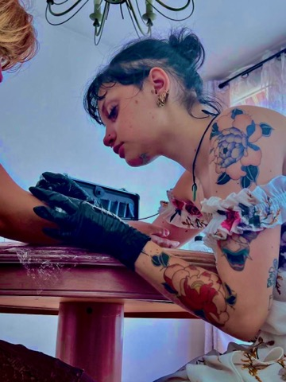

Bulle Grise
tattoo

Douceur de l'âme encrée au corps
Tatoueuse indépendante, je tattoo dans mon shop privé uniquement sur rendez-vous.
Mon style est inspiré du néo-traditionnel mais aussi de l'ornemental et de l'art nouveau,
j'accepte les projets personnels avec grand plaisir!
Détenant aussi la formation adéquate, je pratique l'embellissement au niveaux des
cicatrices telles que les reconstructions mammaires.
Soins recommandés après le tatouage
- Nettoyage doux :
Nettoyez délicatement votre tatouage avec de l'eau tiède et un savon doux, en évitant les frottements excessifs. Utilisez vos mains propres pour tamponner doucement la zone et enlever tout excès d'encre, de sang ou de lymphe. - Séchage délicat :
Après le nettoyage, tamponnez doucement la zone avec une serviette propre ou laissez-la sécher à l'air libre. Évitez de frotter vigoureusement, car cela pourrait irriter la peau. - Hydratation régulière :
Appliquez une fine couche de crème hydratante recommandée par votre tatoueur ou un professionnel de la santé. Évitez les produits à base de pétrole, car ils pourraient obstruer les pores. L'hydratation aide à prévenir le dessèchement de la peau et à favoriser une guérison rapide. - Évitez l'exposition excessive à l'eau :
Évitez de tremper le tatouage dans l'eau pendant de longues périodes, comme dans les bains chauds, les piscines ou les jacuzzis. Les bains de courte durée sont généralement acceptables, mais assurez-vous de tapoter doucement la zone sèche par la suite. - Évitez de gratter ou peler la peau :
Le tatouage commencera à peler et à démanger à mesure qu'il guérit, mais il est important de résister à l'envie de gratter ou de peler la peau. Cela pourrait endommager le tatouage et entraîner une infection. - Vêtements amples et propres :
Évitez de porter des vêtements serrés ou frottants sur le tatouage pendant la phase de guérison. Optez pour des vêtements amples et propres pour éviter toute friction inutile. - Protection solaire :
Une fois le tatouage guéri, protégez-le en l'appliquant régulièrement avec une crème solaire à large spectre. Cela aidera à prévenir la décoloration due à l'exposition au soleil. - Consultez un professionnel en cas de problème :
Si vous remarquez des signes d'infection tels que rougeur, gonflement, chaleur excessive, douleur ou écoulement de pus, consultez un professionnel de la santé rapidement.